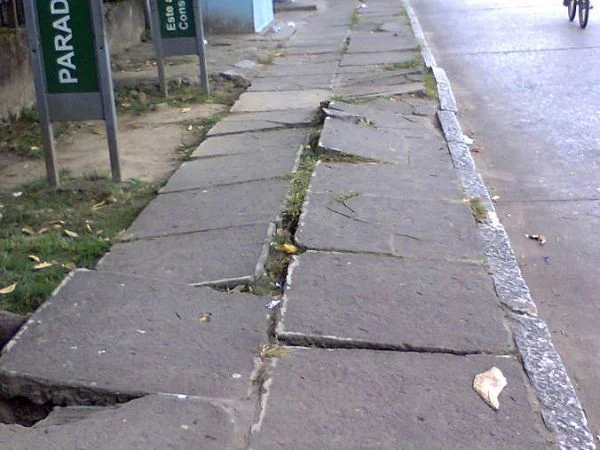
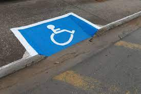
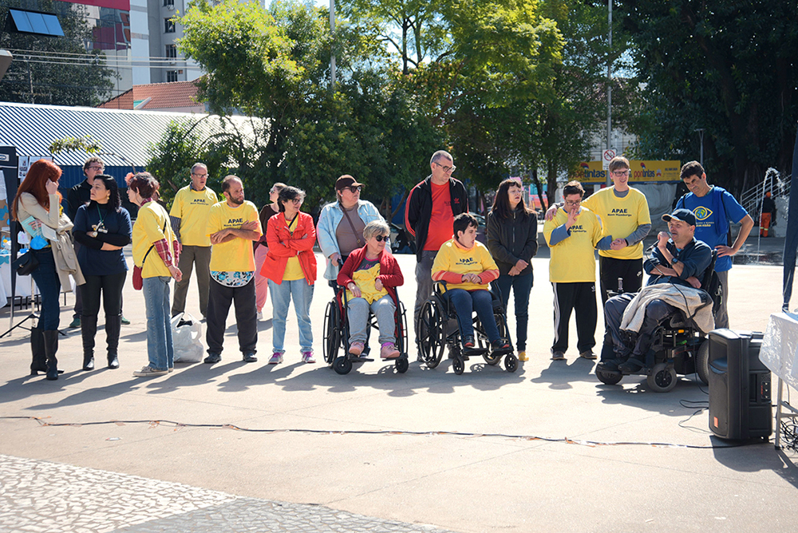

Por: Rosilene maria de jesus | 24/08/2024
A acessibilidade garante que todos os indivíduos, independentemente de suas habilidades físicas ou cognitivas, possam acessar, compreender e participar de todos os aspectos da sociedade. Em Salto da Divisa, a discussão sobre inclusão está ganhando força, especialmente com iniciativas voltadas para adaptar os espaços públicos para pessoas com deficiência.
Incluir significa valorizar as diferenças e adaptar o ambiente para que todos tenham as mesmas oportunidades. Quando falamos de inclusão, não nos referimos apenas à presença, mas à participação ativa e ao respeito pelas necessidades únicas de cada indivíduo.
Durante o projeto, realizamos uma análise detalhada das condições de acessibilidade no Bairro Central. Um dos experimentos mais marcantes foi uma simulação onde os participantes se movimentaram pelas ruas vendados, para sentir na pele os desafios enfrentados por pessoas com deficiência visual.
Calçadas irregulares dificultam a mobilidade no Bairro Central.
Foi constatado que muitas calçadas são estreitas e mal conservadas, dificultando a passagem de cadeirantes e pessoas com mobilidade reduzida. No entanto, também foram identificadas soluções, como a recente instalação de rampas de acesso na praça principal.
Rampa de acesso na praça central de Salto da Divisa.
Acessibilidade não é um favor; é um direito. Discutir e implementar medidas de acessibilidade é garantir que todos possam viver com dignidade e autonomia. Em uma sociedade que valoriza a inclusão, todos ganham.
Inclusão promove convivência e igualdade para todos.
A jornada está apenas começando. Com a participação da comunidade e a colaboração com o poder público, é possível transformar Salto da Divisa em um exemplo de cidade inclusiva, onde todos possam participar ativamente da vida em sociedade.